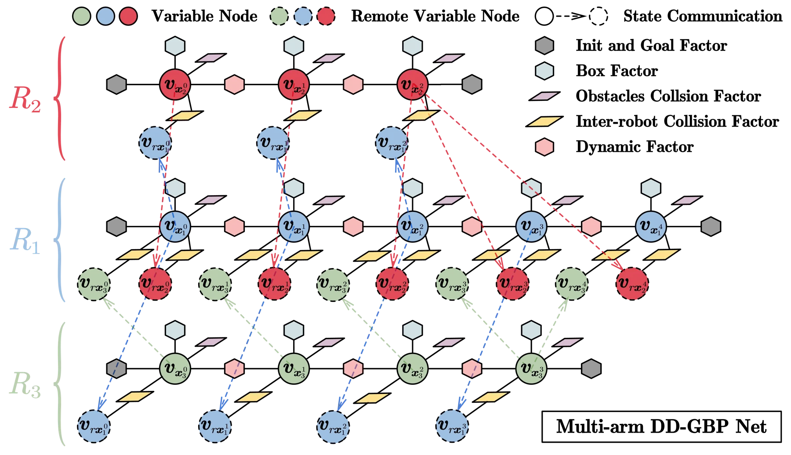
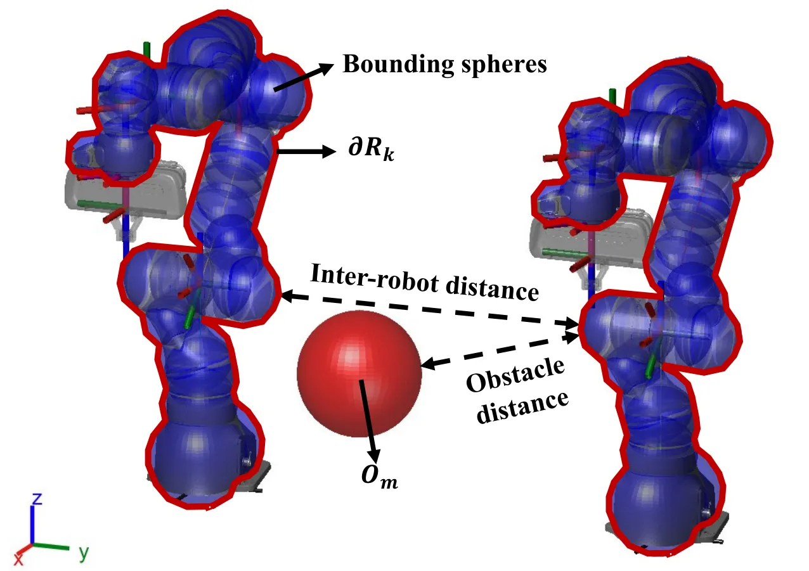
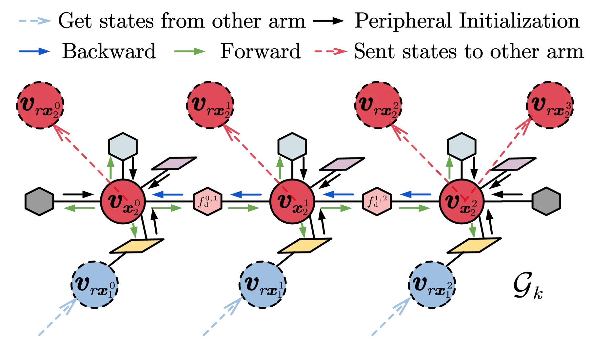
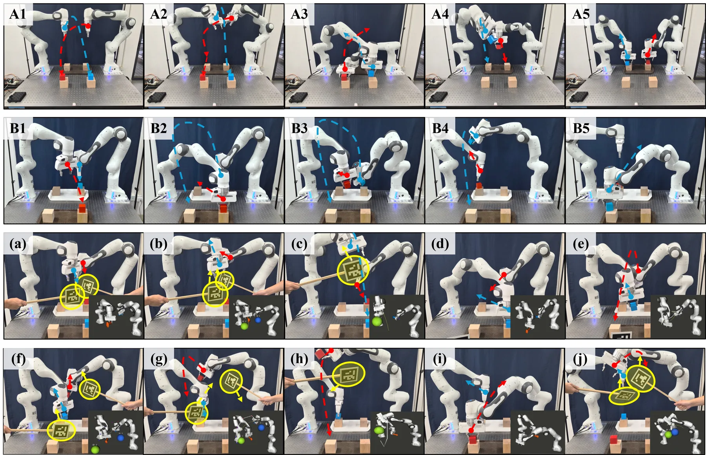

DD-GBP：用分布式动态高斯置信传播做多机械臂随时规划
DD-GBP: Anytime Multi-Arm Planning and Continuous Execution via Distributed Dynamic Gaussian Belief Propagation
DD-GBP 把多臂规划写成动态因子图上的 MAP 推断，用 GP 支撑状态参数化关节轨迹，为每个机器人建局部树图，只通过活跃链路异步传消息。触发式重规划时用 BFS 抽出受影响子网（有深度与节点数上限），并证明剪掉非活跃因子不改变门控目标、重规划前后轨迹变化有局部界、执行用的三次 Hermite 曲线正是 GP 条件均值。50 个四臂场景成功率 92.5%，对照 Syn-GBP 53.5%、GPMP2 23.0%、Gafur NMPC 19.5%、MR-STORM 9.5%、DMPC 2.0%、NADMM 0.0%；30 臂时 99.17–100%、热启动求解 15.80 ms；90% 丢包下 86.0%。代价是热启动求解比 Syn-GBP 慢（16.3 对 7.5 ms）。
作者、单位与技术谱系 · Research context
作者与单位
研究脉络
- GPMP2：GP 轨迹 + 稀疏因子图 MAP方法基座关系：用 GP 参数化连续轨迹并在稀疏因子图上做 MAP 优化，本文沿用 GP 参数化，但把集中式求解换成分布式异步消息传递。[论文第 1 节与第 5 节基线说明]
- Syn-GBP（团队前作，RA-L 2026）团队前作关系：双臂短时装配的同步 GBP，本文扩展到多臂、异步消息、动态子网，并补上四个理论命题。[论文第 1 节与参考文献 [35]]
- DD-GBP（本篇）本篇推进关系：把同步短时程 GBP 推进到可扩展的异步多臂框架，并用命题把工程启发式变成可检验的界。[论文第 III–IV 节]
合作网络
- 清华机械系与美的集团的共同单位关系清华大学 机械工程系 → 美的集团 高端重载机器人全国重点实验室关系：共同单位（同篇论文并列署名）[arXiv 官方 HTML 标题脚注]
- Syn-GBP 到 DD-GBP 的团队延续Zhao Jin 等（Syn-GBP, RA-L 2026） → DD-GBP关系：同一作者的后续工作（团队前作 → 本篇）[论文参考文献 [35]]
- 代码与项目页缺口DD-GBP → 公开仓库（暂无）关系：未发现公开代码或项目页[arXiv 摘要页]
作者与单位来自论文标题脚注（事实）；脉络依据论文自述与参考文献 [35] 的署名重叠（有来源的解读）；网络只记录共同单位、同作者续作与“未发现公开代码”这一事实，未推断师生关系。
方法本质拆解 · What actually changed
是不是微调？
完全不训练。这是纯模型-based 的在线优化方法：没有神经网络、没有数据集、没有离线策略，所有计算都在线做高斯消息传递与局部线性化。所有“参数”都是因子权重与调度阈值，靠粗到细的手工整定（附录 S1–S2 给敏感性）。
有没有额外约束？
约束全部写成因子：关节盒约束、障碍与臂间碰撞（在插值时刻也检查）、GP 运动先验（λ_d 控制平滑度）、初始/目标先验，以及速度/加速度上界（取物理极限的 0.3）。另有两类结构性约束：子网抽取的深度与激活数上限、每个变量每周期只被一个调度器更新。
推理/后端到底做了什么？
后端就是 GBP：变量与因子之间交替传高斯消息，因子在当前线性化点做一阶展开，每个机器人只解自己的树（树结构可用精确的 backward–forward 扫），跨臂只在活跃链路上异步交换。触发式重规划时重建子网并重新线性化，残差够小就提前停止。没有集中式 BA，也没有全局一致性变量。
方法本质是什么？
本质是把“多臂耦合”换成“局部树 + 稀疏跨树边”，再用事件触发决定哪棵子树需要重算：耦合被限制在活跃子网内，非活跃因子被门控剪掉且证明不改变目标，重规划后的轨迹变化有局部界。它改变的是计算的组织方式（谁在什么时候算哪一块），不是模型本身，因此精度上限仍由线性化与 GP 先验决定。
输入是各臂当前关节状态、目标与障碍几何，改动位置在推断的组织方式（局部树 + 活跃子网 + 异步消息），通过事件触发重规划与残差早停把全局耦合问题拆成可截止的局部推断，直接效果是长时程多臂任务成功率大幅提升且执行更平滑。

结论与问题Conclusion & Motivation
核心结论
DD-GBP 的核心结论是：多臂协调不必解一个大耦合问题，把每个机器人的局部轨迹写成树结构因子图、只通过活跃链路异步传消息，就能在长时程动态场景里同时拿到高成功率与毫秒级更新。50 个四臂场景中它达到 92.5% 的无碰撞全目标完成率，第二名 Syn-GBP 只有 53.5%，NADMM 与 DMPC 分别只有 0.0% 与 2.0%。值得注意的是它并非最快：热启动求解 16.3 ms，比 Syn-GBP 的 7.5 ms 慢一倍多，说明收益来自“在同等时间内解得更对”，而不是更低延迟。作者还用四个命题把工程技巧（早停、子网剪枝、重规划、执行插值）各自绑到一个可检验的界上，这是它相对一般系统论文的增量。
动机与问题
集中式多臂规划把所有权器人放进一个耦合状态空间，交互约束可以精确建模，但代价随状态维度和图规模快速上升，难以在线。分布式方法（ADMM/NMPC 一类）把问题拆成每机器人一个子问题，靠一致性约束或反复信息交换协调；对 7 自由度机械臂，碰撞约束会把大量关节变量耦合在一起，子问题高度非凸，容易收敛到差解，且每次重解都很贵。学习式规划器在训练分布外泛化差。作者要的是第三种路径：保留因子图推断的精确结构，但把推断局部化、异步化、可中断化，并让规划与执行共用同一个 GP 参数化，从而在移动障碍下也能持续重规划。
方法Method
方法总览
轨迹用 GP 支撑状态参数化，支撑点之间由 GP 先验连接，过程尺度随加速度幅值自适应；每个机器人维护一棵局部树，因子包括初始/目标先验、关节盒约束、障碍碰撞（在插值时刻检查）、臂间碰撞、运动转移（GP 先验）与插值时刻碰撞因子。推断是标准 GBP：变量到因子、因子到变量的高斯消息交替传递，因子做一阶线性化。触发条件（间隙小于 ε_c=0.10 m、目标切换等）到来时，从触发源做有界 BFS 抽出受影响子网（深度 d_max、激活数上限 N_act=8），子网内做树导向的局部求解，子网间通过活跃链路异步交换消息；每次迭代可用残差界提前停止。执行时把 GP 条件均值写成三次 Hermite 曲线交给控制器，命题 4 证明这与规划用的 GP 先验一致。
关键技术细节
参数上：N_iter=20、ε_E=1e-3、ε_c=0.10 m、r_c=0.4 m、N_act=8、N_min=3、Δt∈[0.01,0.6] s，插值每个区间 3 个监测点，速度/加速度上界取 Panda 物理极限的 0.3。四个命题分别对应：随时早停的残差界（Prop.1）、硬门控子网切换与完整目标等价（Prop.2）、重规划触发后相对时间对齐旧轨迹的局部变化界（Prop.3）、GP 条件均值与 Hermite 执行轨迹一致（Prop.4）。工程上最关键的是“子网抽取成本 O(N_act·N_neighbors)，与团队规模 K 无关”，这是它能扩到 30 臂的结构性原因；另一个细节是每个变量在一个重规划周期内只被一个调度器更新，避免消息重复。

实验Experiments
实验设置
50 个匹配的四臂长时程场景：四台 7 自由度 Panda 在 2×2 网格上、最近邻间距 0.8 m，初始球面间隙 0.204 m（比 0.10 m 触发阈值多 0.104 m），每臂需在 60 s 仿真时间内依次到达 3 个关节空间目标，同时保持 d(q)>0；4 个半径 0.08 m、速度 0.20 m/s 的球形障碍在 [-1,1]² 内往复反弹。平台为 Gazebo/ROS + i9-14900KF（CPU），MR-STORM 用 RTX 4080 SUPER。对照六个：Syn-GBP、GPMP2（官方 GTSAM 集中式）、Gafur NMPC、DMPC、MR-STORM（GPU MPPI）、NADMM。指标为成功率、条件间隙、冷/热求解时间、完成时间、路径长度、关节误差、速度/加速度峰值；另有 1–30 臂扩展实验与双臂实机。
实验数字与比较
主表（表 I）：成功率 92.5%，Syn-GBP 53.5%、GPMP2 23.0%、Gafur 19.5%、MR-STORM 9.5%、DMPC 2.0%、NADMM 0.0%；热启动 16.3 ms（Syn-GBP 7.5、GPMP2 15.1、Gafur 88.0、DMPC 229.0、NADMM 559.2），冷启动 25.8 ms。执行质量：加速度峰值 15.6 rad/s²，Syn-GBP 48.3、GPMP2 109.8、Gafur 357.5；关节误差 2.41 mrad 对 Syn-GBP 5.26；速度峰值 0.77 对 1.0 rad/s。扩展：1–30 臂无外部障碍时成功率 99.17–100%，热启动 4.61–15.80 ms；鲁棒性：90% 丢包仍 86.0%，跳过 1–5 个发送周期 85.0–89.0%（热启动 16.0–16.6 ms），障碍位置噪声 5 cm 时 77.5%。
消融/失败边界
去掉插值时刻碰撞因子是最大退化：成功率 64.0%（−28.5 点），加速度峰值升到 49.8；去掉自适应 Δt 77.5%、去掉 GP 尺度自适应 80.0%、去掉子图 83.5%、去掉自适应激活数 87.0%、去掉事件触发 89.0%、去掉树消息 90.0%。反过来，打开障碍状态预测把成功率从 92.5% 提到 98.0%，代价是通信 2.64 MB/s（默认关闭），说明“动态障碍”在默认配置下主要靠当前位置而非预测。失败边界有三条：一是比较预算不对称，MR-STORM 用 GPU 而其余用 CPU；二是场景是同类 7 自由度臂、固定基座、已知几何，异构平台未验证；三是成功率定义依赖 60 s 预算，超时即失败，长时程任务在更大工作空间下的表现未知。
局限与迁移Limitations & Transfer
局限与待核验
作者承认两条：非线性、时变 GBP 的收敛理论仍待推进；跨异构平台的多机协调是未来工作。我们的待核验项：摘要写 30 臂“99.87% 成功率”，正文与结论写“99.17–100%”，两处不一致，引用时应以正文区间为准；线性化推断只给出局部精度分析，没有全局收敛保证；默认关闭障碍预测，意味着“响应移动障碍”实际依赖重规划频率而非预测模型；没有与集中式非线性 MPC 在同等 CPU 预算下比较；实机只做到双臂、单工作台，缺少三臂以上物理验证；代码与项目页截至抓取时未公开。
与你研究路线的关系
这篇论文的方法论与 SLAM 后端同源：GBP 的消息传递就是线性化因子图上的 Gauss-Newton 类推断，因此四个命题几乎可以逐条搬到状态估计。可迁移模块有三个：一是“残差界驱动的随时早停”，给固定时间预算下的 BA/位姿图一个可解释的停止准则；二是“门控子网重线性化”，只重建受影响因子并证明目标不变，这对应滑动窗口里只重算局部、其余保持线性化点的做法；三是“规划与执行共用同一 GP 先验”，对应把轨迹/预积分模型同时用于优化与控制，避免两端模型不一致。下一步实验：在一个固定滞后的 BA 窗口上实现“活跃子图 + 残差早停”，在相同时间预算下比较 ATE 与迭代次数；同时测重线性化触发阈值对一致性的影响，验证 Prop.3 式的局部界在视觉惯性系统里是否仍成立。





